Встречайте 2-ю ежегодную премию The Servies! Эта награда посвящена исключительно сотрудникам зала. Мы гордимся тем, что даём заслуженное признание тем, кто наливает, обслуживает, рассаживает и встречает гостей.


Миссия
The Servies существует, чтобы чествовать сотрудников зала ресторанов. Мы стремимся рассказывать истории этих разных людей, работающих с гостями, — тех, кто поддерживает работу ресторана, делает больше, чем требуется, и приходит на работу с лучшим настроем, что бы ни преподносила жизнь.
Как это работает
Коллеги, клиенты, друзья и семья — кто угодно может номинировать сотрудника зала на премию Servie. Можно даже номинировать себя! Затем наше уважаемое жюри выбирает финалистов, а победителей определяет публичное голосование.
Трофей The Servies
Каждый победитель получит собственный новенький трофей The Servies с именной гравировкой.

Чаевые $3,000
Чаевые всей жизни. Каждый победитель The Servies получает подарочную карту на $3,000.

Призы для занявших второе место
Занявшие 2-е место в каждой категории получают сертификат и подарочную карту на $1,000.

Лучшая команда зала
Для целых команд, которые работают слаженно, радуют гостей и делают ресторан одним из самых популярных в городе.

Лучший бармен
Для тех, кто наливает напитки, проверяет документы и сохраняет спокойствие, даже когда гость заказывает ром со Спрайтом.

MVP зала
Для сотрудника зала, который всегда ставит других на первое место, создаёт приятную атмосферу и которому можно доверить что угодно.

Лучший менеджер
Для тех, кто тушит пожары, поддерживает команду и как-то справляется с невыносимыми гостями за столиком 22.

Лучший хостес
Для тех, кто встречает гостей, рассаживает их и сохраняет спокойствие, когда гость жалуется на долгое ожидание.

Лучший официант
Для официантов-многостаночников, которые жонглируют столиками и разливают соусы, творя магию ради довольных гостей.


Подать
номинацию
Может, вы гость, благодарящий официанта, который изменил ваш вечер, а может — официант, желающий поблагодарить бармена, утоляющего жажду ваших гостей. Подайте номинацию, чтобы отметить прекрасных сотрудников зала. И не забудьте попросить друзей тоже номинировать.
Хотите узнать, кого мы ищем среди номинантов The Servies? Ознакомьтесь с правилами и критериями оценки.
Приём номинаций закрывается 23 августа в 23:59 по времени EST.
Поделитесь своей номинацией
Поделиться в соцсетях
Поделитесь с номинантом
Сообщите им, что вы номинировали их на премию Servie.
Попросите других номинировать
Призовите других отметить сотрудников зала.


Жюри

Санджив Раздан
CEO Coffee Bean, Tea Leaf
.webp)
Квини Рид
Совладелец Poppy & Seed, Poppy & Rose, Root of all food

Дэвид Мортон
Владелец DMK Restaurants

Мигель Эрнандес
COO и совладелец Rreal Tacos

Лиза Даль
Шеф-повар и владелец Dahl Restaurant Group
знакомьтесь: победители THE SERVIES 2022
В прошлом году было номинировано более 7 500 работников ресторанов. Они набрали почти 18 000 голосов! Знакомьтесь с 8 победителями, которые оказались лучше всех.
.webp)
Дженнифер — лучшая атмосфера
Laurelwood Public House & Brewery, Портленд, Орегон
.webp)
Тиффани — лучший бармен
Hurricane Grill & Wings, Нептьюн-Бич, Флорида
.webp)
Фелиция — лучший хостес
Floridino's Pizza and Pasta, Чандлер, Аризона
.webp)
Клейтон — лучший менеджер
V DTLA, Лос-Анджелес, Калифорния

Алейша — лучшая старательность
Walthers Twin Tavern, Норт-Кантон, Огайо
.webp)
Cozy Corners Tavern & Grill — лучшая команда зала
Барбо, Мичиган
.webp)
Лорен — лучший командный игрок
Applebee's, Бентон-Харбор, Мичиган